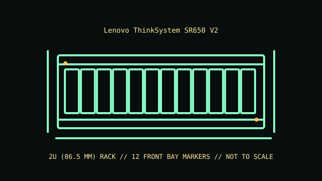

[ MODEL IDENTIFICATION // THINKSYSTEM SR650 V2 // 2U SERVER ]
Lenovo ThinkSystem SR650 V2
2U (86.5 mm); 86.5 × 482.1 × 763.7 mm (H × W × D, with latches per Lenovo); rails, cable arm and selected rear storage extend installation depth.

REVISION CAVEAT: The 24 SFF / 12 LFF front layouts and optional middle/rear storage are alternative supported configurations. Check the MTM, backplane and riser maps before upgrades.
Specifications & fit
| Catalog subcategory | Rack server enclosures |
|---|---|
| Model / board and backplane | Lenovo dual-socket Xeon Scalable system board with front and optional mid/rear storage backplanes. SAS/SATA/NVMe support depends on drive cage, cable set and RAID/HBA configuration. |
| Rack height / dimensions / rails | 2U (86.5 mm); 86.5 × 482.1 × 763.7 mm (H × W × D, with latches per Lenovo); rails, cable arm and selected rear storage extend installation depth. Lenovo tool-less rail kits with optional cable-management arm; check rail generation, rack post fit, depth and rear service clearance against installation instructions. |
| Power supply | Redundant hot-swap PSU modules with AC/DC options and wattages from 550 W through 2400 W for qualified builds; select matched supplies according to CPU/GPU and disk population. |
| Drive bays | Front options include up to 24 × 2.5-inch or 12 × 3.5-inch hot-swap drives; optional mid/rear cages expand storage subject to chassis/riser tradeoffs. M.2 is supported in specific kit configurations. |
| Expansion / risers | Up to eight PCIe Gen4 slots across three risers in supported layouts; GPU/card width and height depend on riser, processor and drive-cage configuration. |
| Cooling | Redundant hot-swap fans with N+1 cooling architecture; fan type and count depend on processors, storage and accelerator options. Maintain the original airflow baffles and fan population. |
| Compatibility | SR650 V2 uses a distinct V2-generation system board, risers, backplanes and cooling parts. Existing SR650 records refer to the original generation; parts are not assumed interchangeable. |
| Revision identification | The 24 SFF / 12 LFF front layouts and optional middle/rear storage are alternative supported configurations. Check the MTM, backplane and riser maps before upgrades. |
Compatibility & preservation notes
SR650 V2 uses a distinct V2-generation system board, risers, backplanes and cooling parts. Existing SR650 records refer to the original generation; parts are not assumed interchangeable.
Lenovo tool-less rail kits with optional cable-management arm; check rail generation, rack post fit, depth and rear service clearance against installation instructions. Always use the correct lifting procedure for the complete installed unit and disconnect power before service.
- Record the full model/product number, serial label, board and backplane identifiers, installed risers, PSU labels and rail-kit part number before disassembly.
- For rack servers, verify exact generation, bay/backplane, controller, riser, fan and PSU compatibility; equal rack height does not establish parts compatibility.
- Keep drive carriers, blanks, shrouds, brackets and fasteners labeled with their original chassis and position. Measure the complete chassis, rails and cable arm before rack installation.
Manufacturer manuals & product specifications
- Lenovo ThinkSystem SR650 V2 Product GuideManufacturer documentation for this exact model family; verify the machine/product number and document revision.
- Lenovo ThinkSystem SR650 V2 technical specificationsManufacturer documentation for this exact model family; verify the machine/product number and document revision.
Published dimensions and option maxima vary by build. Check the specific product number and measure the specimen before restoration, shipping or installation.